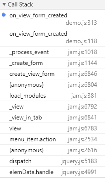

Jam.py documentation
Form events¶
The first event triggered on the client, after the task is loaded, is the on_page_loaded event. In the demo application this event is used to create a dynamic menu, based on the task tree. For each visible item, clicking on the menu will trigger JQuery event to view or print the item.
To keep track of the event as accurately as possible, we set a breakpoint in the source code of the task client module in the on_view_form_created event handler of the Customers item. 1:

To understand the order of events 2, let’s look at the stack of function calls:
Apparently the on_view_form_created event handler was called by the _process_event function. This function calls three on_view_form_created event handlers:
One for the task, if defined in the task client module,
Second for the item’s owner, if defined in the group client module,
and finally thrid for the item, if defined in the item client module,
// Part of the _process_event function code
if (this.task[event]) {
if (this.task[event].call(this, this)) return;
}
if (!this.master && this.owner[event]) {
if (this.owner[event].call(this, this)) return;
}
if (this[event]) {
if (this[event].call(this, this)) return;
}
following the task tree structure.
This way, you can place your code in the task client module, and it will apply to all other modules, as the author of Jam.py does, or to the client module of a group, so it will apply to all group items, and you can write code for each item. All of them will be executed, and the result will be the product of all written.
In the same way, events are generated for other types of forms, with the exception of the close_query events, they are triggered in the reverse order.
Footnotes
- 1
The code of the Jam.py framework has changed a lot since the time of recording the corresponding video. So we will show the essence in a slightly different way
- 2
Hierarchical event processing is what distinguishes Jam.py most, contributes to the small size of the code and some kind of inheritance behavior.